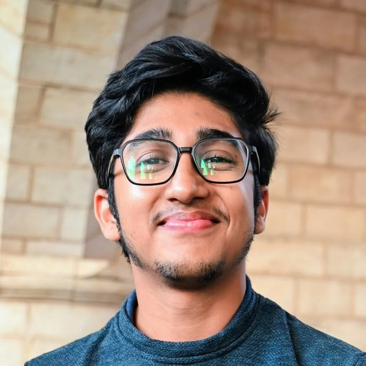
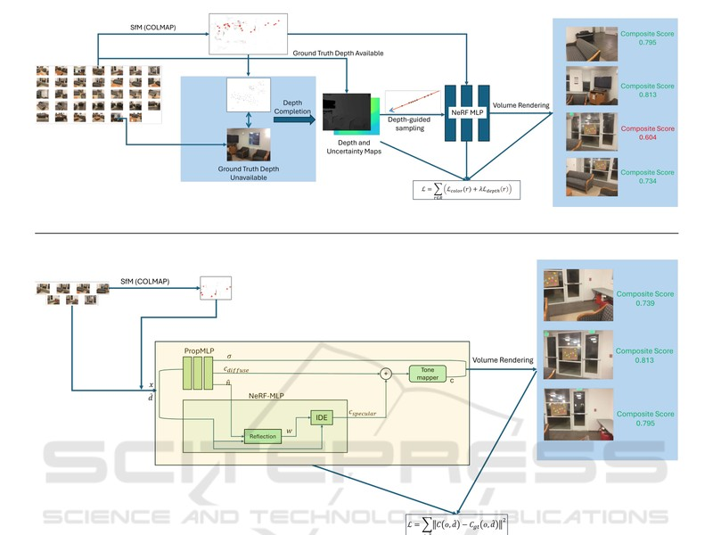

I am a PhD student in the Processing Speech and Images (PSI) lab at the Department of Electrical Engineering (ESAT), KU Leuven, advised by Prof. Patrick Vandewalle. My PhD is funded by the Research Foundation Flanders (FWO). Before that, I did my Master's at KU Leuven, graduating summa cum laude.
My research focuses on dynamic 3D scene understanding. When we look at the world, we see more than geometry: we understand how things move, how they interact, and what we could do with them. I want machines to understand dynamic 3D scenes in the same way, reasoning about how they change and predicting what they afford.
I am open to collaborations and research internships. If our interests overlap, feel free to send me an email. I'm always happy to connect!
Research Interests: Dynamic 3D Scene Understanding • 4D Reconstruction • Gaussian Splatting • Novel View Synthesis • 3D Foundation Models
Email: sudarshan [dot] iyengar [at] kuleuven [dot] be

For a full list, see my Google Scholar profile.
New work, details soon.

VISAPP 2025 Best Student Paper Award